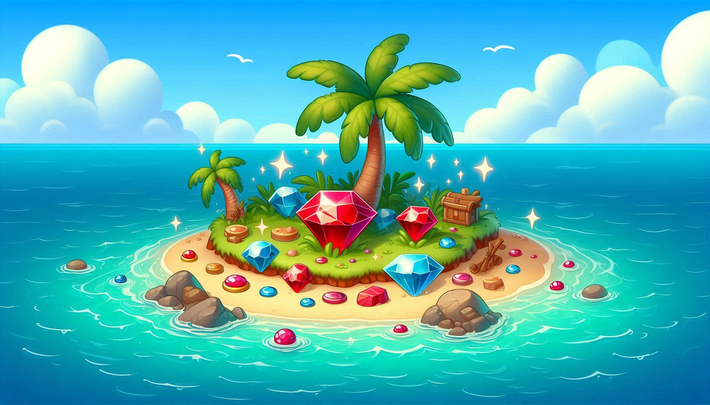
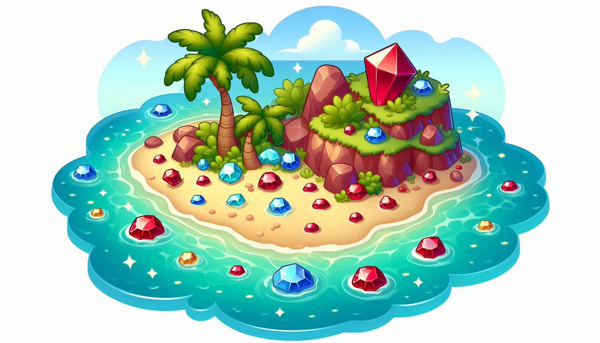
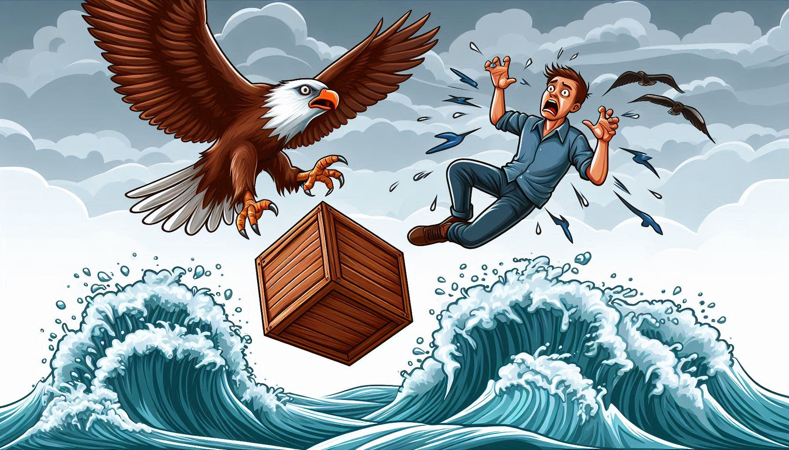

حكاية بلاد الجواهر
 كان يا ما كان في قديم الزمان، أخوان، الكبير اسمه “غانم” والصغير “سالم”، كان “غانم” تاجراً ميسور الحال، يملك دكاناً وبيتاً كبيراً، أما أخوه الأصغر “سالم” فكان فقيراً، يعمل ليلاً ونهاراً لكن حاله يزداد صعوبة يوماً بعد يوم. في إحدى الليالي، عاد “سالم” إلى بيته الصغير مهموماً، لم يجد ما يطعم به أسرته، جلست بجانبه زوجته الحكيمة وقالت له بصوت هادئ: “يا سالم، لقد سمعت حكاية قديمة من جدتي، تقول الحكاية إن من يصعد إلى سطح المنزل قبل الفجر ويجلس في صندوق خشبي، يأتي طائر الصقر العظيم ويحمله إلى مكان بعيد مليء بالخيرات. لم لا تجرب؟ ليس لدينا ما نخسره. نظر “سالم” إلى زوجته بتردد، لكن الأمل لمع في عينيه، وفي صباح اليوم التالي، فعل ما قالته زوجته، صعد إلى السطح، وجلس في صندوق خشبي قديم، وأغلق على نفسه الغطاء، وما هي إلا لحظات حتى شعر بارتجاج عنيف، لقد أمسك الصقر العملاق بالصندوق بمخالبه وطار به عالياً في السماء. بعد رحلة طويلة، حط الصقر على بلاد عجيبة، فتح “سالم” الصندوق بحذر، فكاد عقله يطير من الدهشة! كانت الأرض تتلألأ تحت أشعة الشمس، مفروشة بالياقوت الأحمر والجواهر الثمينة، خرج “سالم” بسرعة، وجمع ما استطاع حمله في جيوبه، ثم عاد إلى الصندوق وجلس في صمت، وكما أتى به، أعاده الصقر إلى سطح منزله مع كنزه الثمين. كرر “سالم” الرحلة لمرات قليلة، وباع الجواهر واشترى بيتاً جديداً وبدأ تجارة مباركة، وانفرجت حالته. لاحظ أخوه “غانم” التغيير المفاجئ، فذهب إليه وسأله بغيرة: “يا سالم، من أين لك كل هذا المال فجأة؟ أخبرني بسرك!” وبقلبٍ طيب، روى “سالم” لأخيه القصة كاملة، وحذره قائلاً: “السر يا أخي هو الصمت والأمانة، لا تجعل الصقر يشعر بوجودك أبداً.” لكن الطمع ملأ قلب “غانم” وفي اليوم التالي، قام بتقليد أخيه. وبينما كان الصقر يحمله في الجو، لم يستطع “غانم” الانتظار، ففتح الصندوق وصرخ: “هيا أيها الصقر! أسرع إلى جزيرة الياقوت، فأنا أريد أن آخذ منها أكثر من أخي!” عندما سمع الصقر الصوت البشري، أصابه فزع شديد لم يشعر به من قبل، ارتخت مخالبة من الصدمة، فسقط الصندوق وبداخله “غانم” كالحجر، وهوى في أعماق البحر المالح، وهكذا، كانت نهاية الطمع وخيمة، بينما عاش “سالم” وعائلته في سعادة ورخاء بفضل صبره وأمانته.
🎧 استمع للحكاية بصوت جدي الحكيم
💡والآن، هذا هو تحديك: “عندما تجد شيئاً ليس لك (قلم في الفصل، مبلغ مالي صغير)، ابحث عن صاحبه وأعده إليه، الأمانة في الأشياء الصغيرة تصنع رجالاً عظماء في المستقبل.”